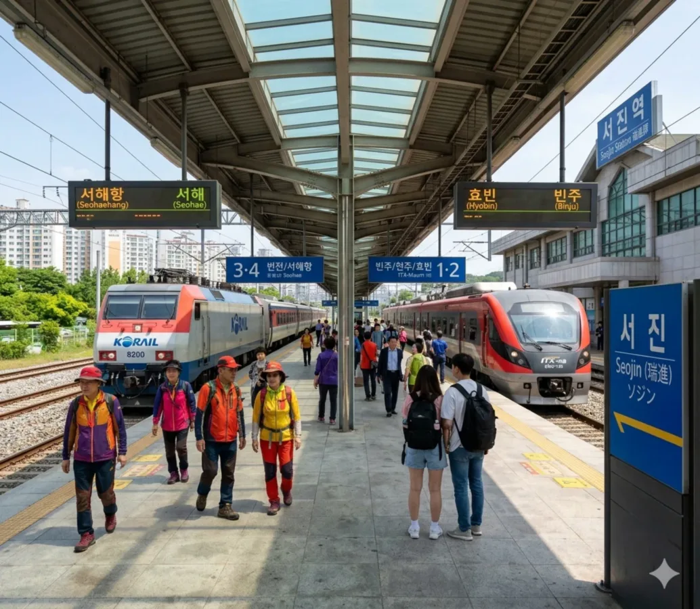

쇠퇴한 산업도시에서 다시 뛰는 관광도시 서진시의 관문.
덕빈북도 서진시 아은동에 위치한 빈효선의 철도역이다.
과거 서해안의 대표적인 광업 및 물류 도시였던 서진시의 중심역이다. 1980년대까지만 해도 전국구급으로 석탄과 광물을 퍼나르던 수송 열차로 붐볐으나, 지금은 철저히 여객과 관광 중심의 역으로 돌아가고 있다. 구도심(서진동)과 신시가지(아은동)의 딱 중간에 자리 잡고 있어 시민들의 주요 교통 허브 역할을 독톡히 해낸다. KTX는 안 서지만, 대신 관광 특화 열차인 해양열차가 꼬박꼬박 정차하여 바다를 보러 온 관광객들을 실어 나른다.
1928년 빈효선 개통과 함께 영업을 개시한, 무려 100년을 바라보는 뼈대 있는 역이다. 초기에는 화물 수송이 주력인 역이었으나, 서진시가 1963년 시로 승격되고 인구가 폭발적으로 늘어나면서 여객 수요가 미친 듯이 떡상했다. 현 역사는 1995년에 새로 지은 웅장한 콘크리트 역사로, 다소 투박하긴 하지만 과거 잘 나가던 서진시의 짬바를 느끼게 해 준다.
산업화 시대가 저물면서 서진시의 인구 감소와 함께 이용객이 썰물처럼 빠져나갔으나, 최근 서진시 차원에서 도시 재생 사업의 일환으로 역 광장을 대대적으로 리모델링하고 문화 공간을 쑤셔 넣는 등 처절한 쇄신을 꾀하고 있다.

2면 4선의 쌍섬식 승강장 구조를 갖추고 있다. ITX-새마을 등 일부 상위 등급 열차가 대피하거나 우선 정차할 수 있도록 정석적으로 설계되어 있다.
| 번호 | 노선 및 등급 | 행선지 |
|---|---|---|
| 1 · 2 | 빈효선 (상행) | 빈주·천주·효빈 방면 |
| 3 · 4 | 빈효선 (하행) | 번전·서해·서해항 방면 |
| 연도 | 일반/관광열차 | 비고 |
|---|---|---|
| 2000년 | 15,420명 | 과거 리즈 시절 |
| 2010년 | 8,510명 | 산업 쇠퇴기 |
| 2020년 | 3,500명 | 코로나19 여파 |
| 2024년 | 6,800명 | 해양열차 관광객 유입으로 반등 |
과거 '검은 황금'이라 불리던 석탄을 퍼나르던 리즈 시절에는 하루 1만 5천 명을 가볍게 찍었으나, 광산업이 망하면서 이용객이 반토막 났다. 다행히 최근 해양열차가 인기를 끌면서 관광객 수요가 유입되어 다시 숨통이 트이고 있는 상황.